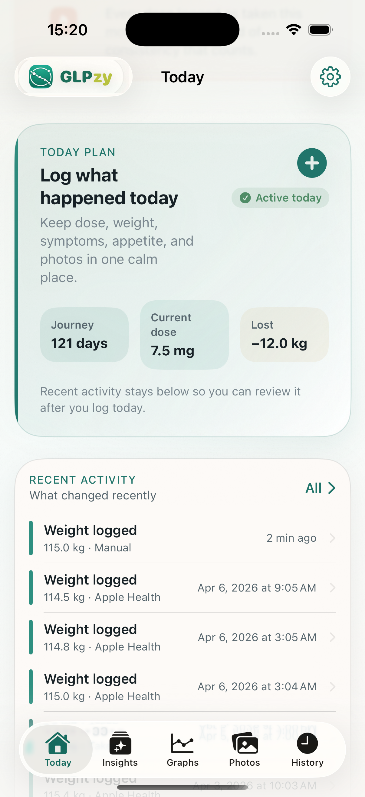

Jasně vidět pokrok
Hmotnost, dávky a grafy trendů.
Zaznamenávejte dávky, hmotnost, příznaky, chuť k jídlu, fotografie, připomínky a kontext Apple Health v jedné soukromé aplikaci pro osobní přehled.

Získejte přehlednější historii schůzek.
Hmotnost, dávky a grafy trendů.
Porovnávejte, ukládejte a sdílejte své pokrokové fotografie.
Vytvořte si klidné shrnutí poskytovatele PDF z vaší zaznamenané léčby, hmotnosti, příznaků a měření.
Odhadovaný trend expozice je relativní odhad osobního sledování. Nejedná se o naměřenou koncentraci v krvi. Vychází ze zjednodušeného modelu. Nepoužívejte toto pro rozhodnutí o dávkování.
Ke sledování dávek, hmotnosti, příznaků, upomínek nebo objednávek není nutný žádný účet.
GLPzy ukládá vaše záznamy do tohoto zařízení, pokud se nerozhodnete exportovat, sdílet nebo zahrnout informace do žádosti o podporu.
Není vyžadován žádný účet GLPzy. GLPzy nepoužívá úložiště na iCloudu řízené aplikací pro zdravotní záznamy. Můžete také vytvořit místní záložní soubor GLPzy a obnovit jej později.
Přístup Apple Health je volitelný a omezený na oprávnění, která udělíte. GLPzy importuje historii tělesné hmotnosti a výšku a poté čte tělesné složení, spánek, pohyb, cvičení, kalorie, bílkoviny a souhrny vody v režimu pouze pro čtení. Nic se neodepisuje.
GLPzy nejprve vytvoří místní bezpečnostní zálohu a poté nahradí místní záznamy na tomto zařízení.